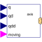
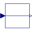
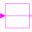
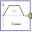

PathToAxisControlBusMap path planning to one axis control bus |

|
Diagram
{kind=link}
Information
This information is part of the Modelica Standard Library maintained by the Modelica Association.
This model stores the 4 reference variables q, qd, qdd, moving from the path planning on the axis control bus.
Parameters (2)
| nAxis |
Value: 6 Type: Integer Description: Number of driven axis |
|---|---|
| axisUsed |
Value: 1 Type: Integer Description: Map path planning of axisUsed to axisControlBus |
Connectors (5)
| q |
Type: RealInput[nAxis] |
|
|---|---|---|
| qd |
Type: RealInput[nAxis] |
|
| qdd |
Type: RealInput[nAxis] |
|
| axisControlBus |
Type: AxisControlBus |
|
| moving |
Type: BooleanInput[nAxis] |
Components (4)
|  | q_axisUsed |
Type: RealPassThrough |
|---|---|---|
| qd_axisUsed |
Type: RealPassThrough |
|
| qdd_axisUsed |
Type: RealPassThrough |
|
|  | motion_ref_axisUsed |
Type: BooleanPassThrough |
Used in Components (2)
|
Modelica.Mechanics.MultiBody.Examples.Systems.RobotR3.Utilities Generate reference angles for fastest kinematic movement |
|
|  |
Modelica.Mechanics.MultiBody.Examples.Systems.RobotR3.Utilities Generate reference angles for fastest kinematic movement |